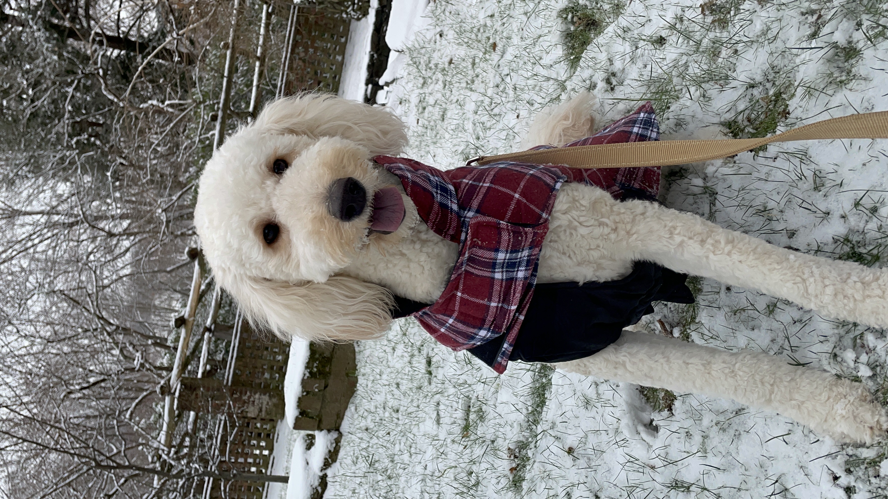
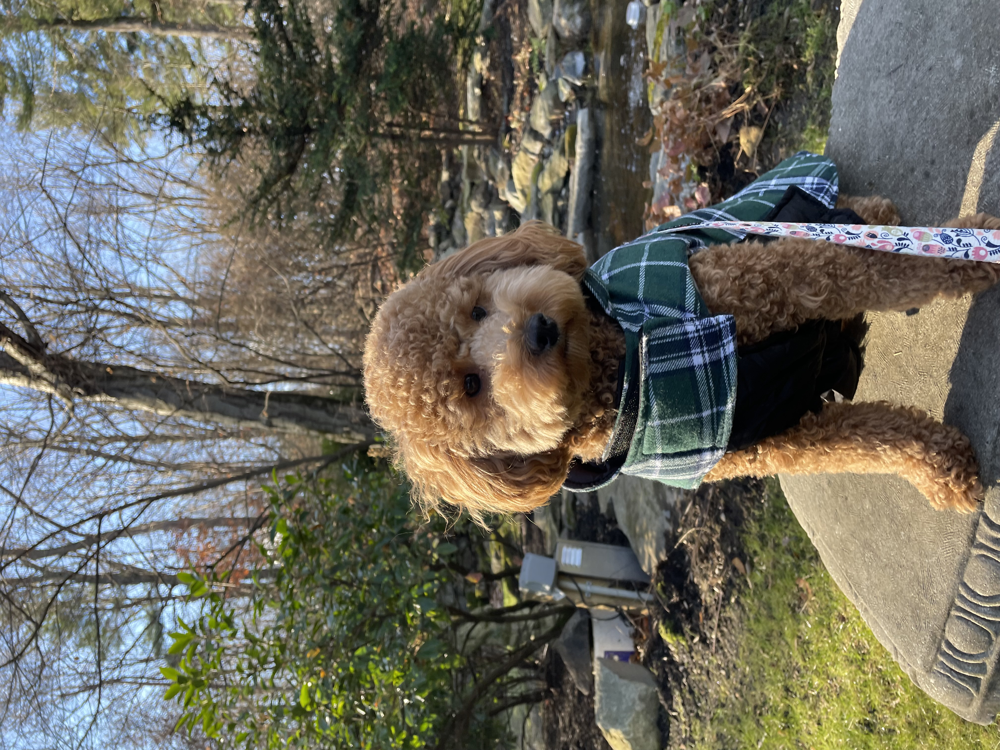
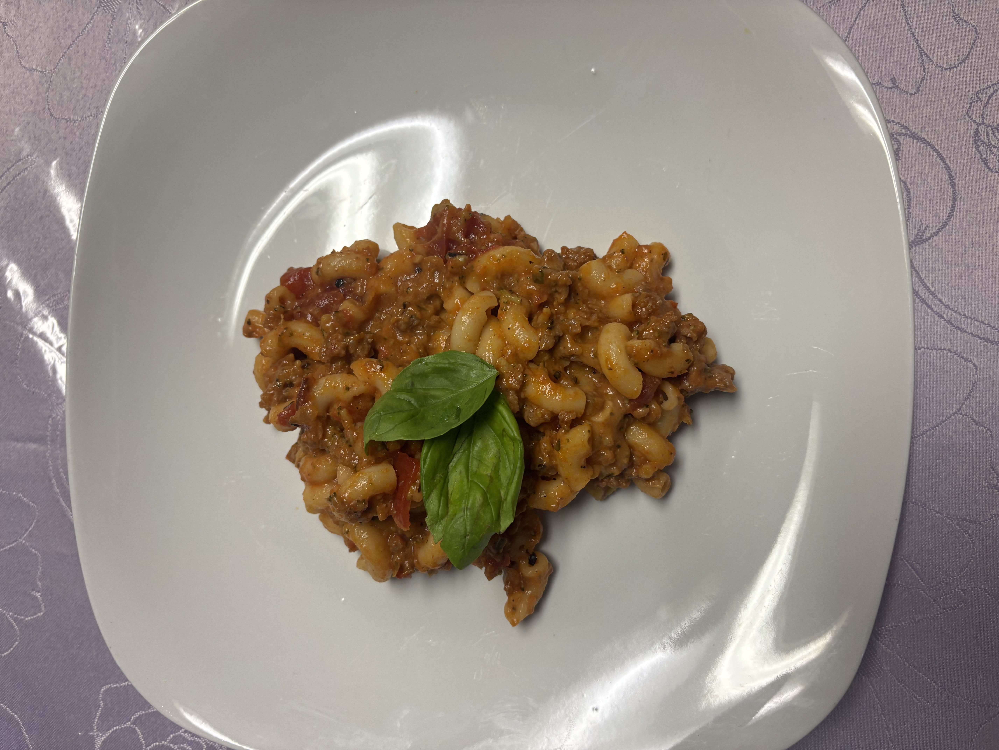
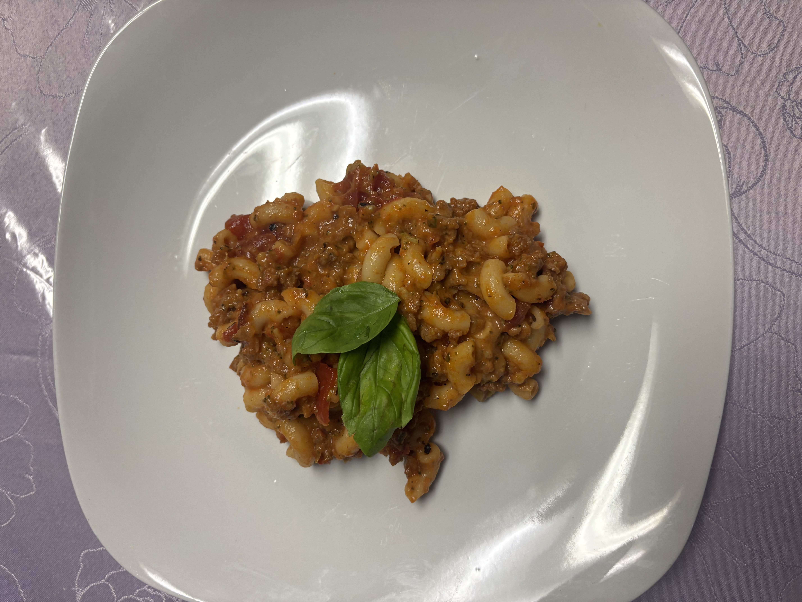
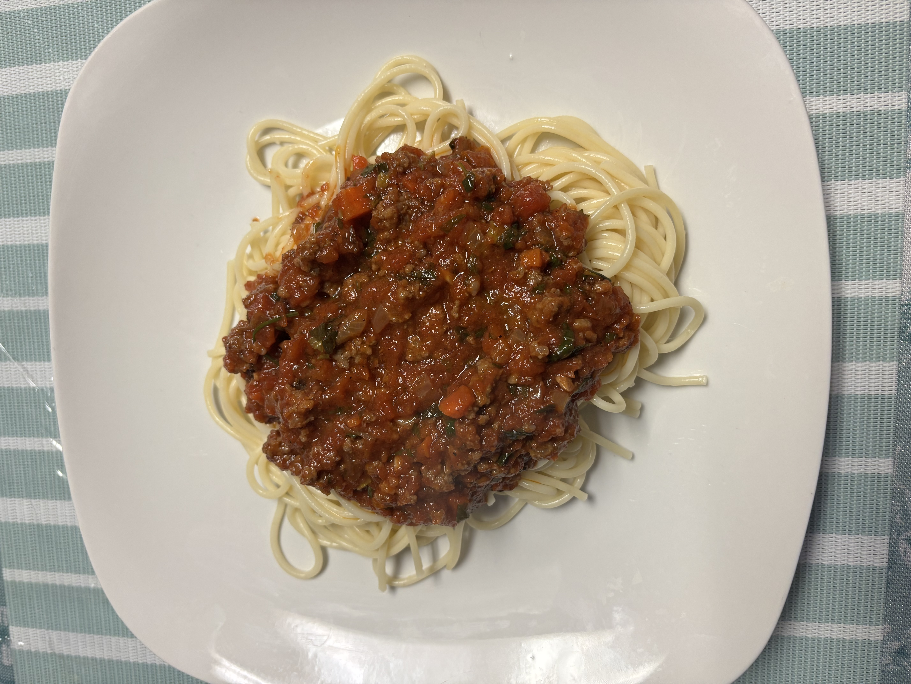
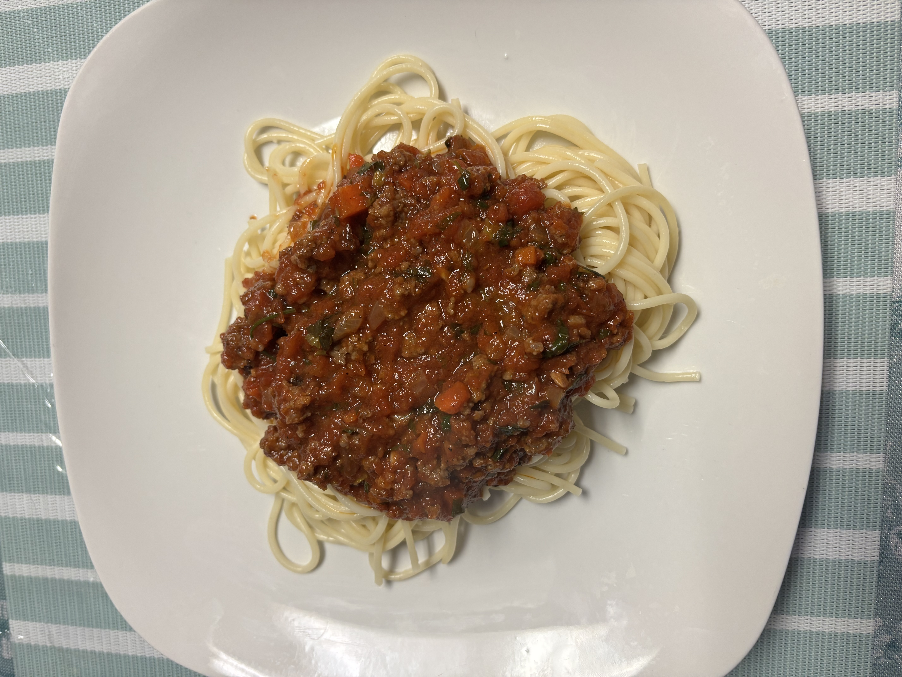
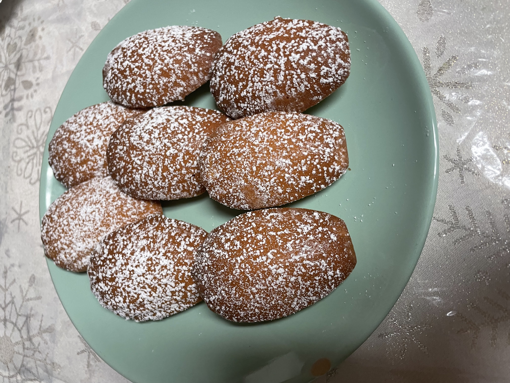
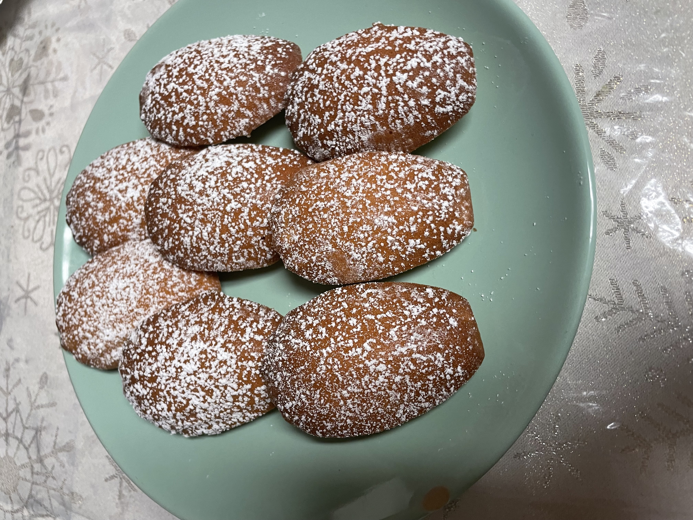

About Me - Aaliyah
- I live in Brooklyn
- I have 2 golden doodles - Coco ↙️ and Brownie ⬇️
 
- My favorite color has got to be Navy or Burgundy, or really any darker shade of a color
- But I do still lighter colors sometimes (it just depnds on the context, like in summer i'll got for a lighter color palette), im not emo or anything like that
- I love baking and cooking! I have a ton of recipe books at home and will bake and/or cook legit whenever. It just so chill, yes sometimes it doesn't always come out the best, but personaly, I've never made anything considerably "bad" or "in-edible, it just could be better for next time.
Here are just a few things I've made⬇️
Dinners
 
 
 

Desserts

 
 

And some extra becuase I just love how good these photos look